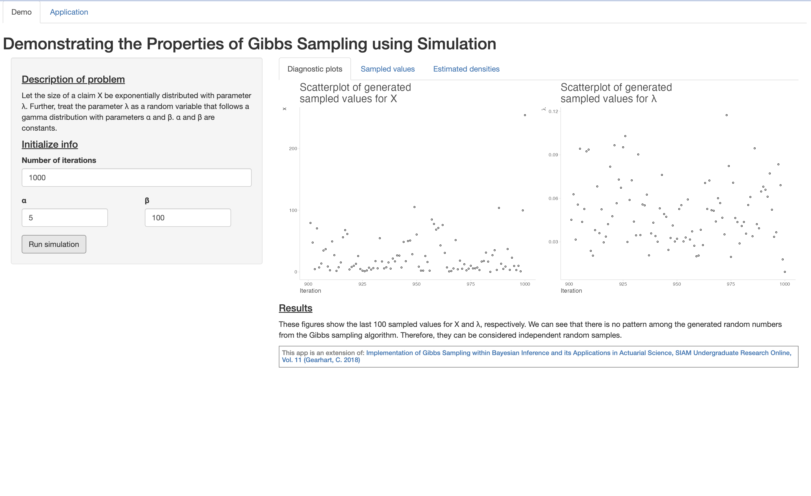
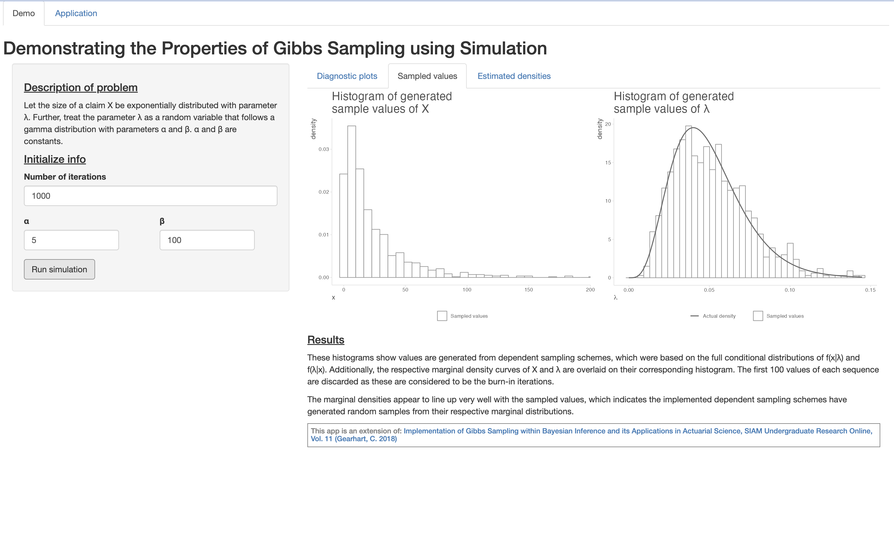
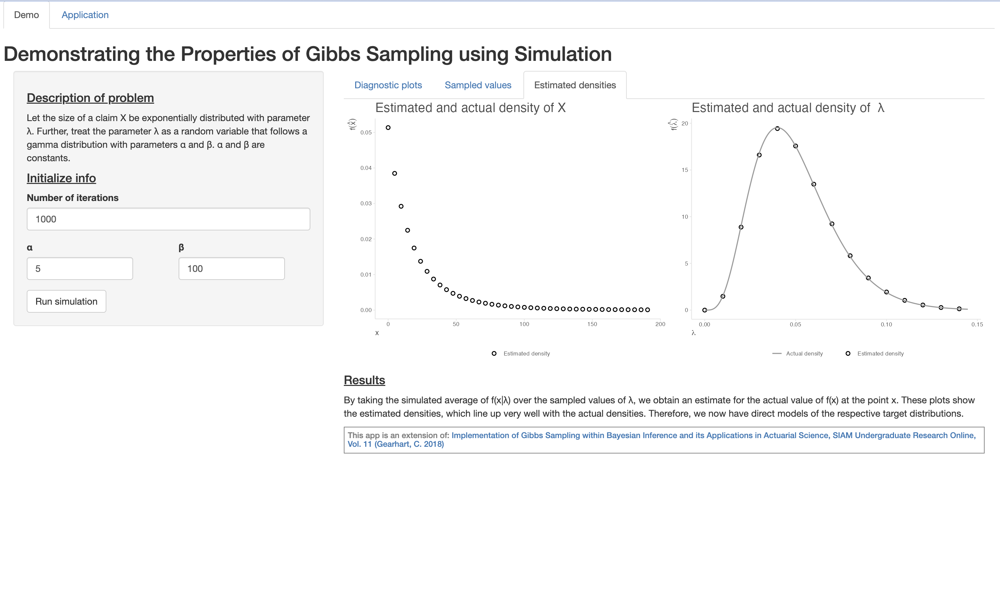
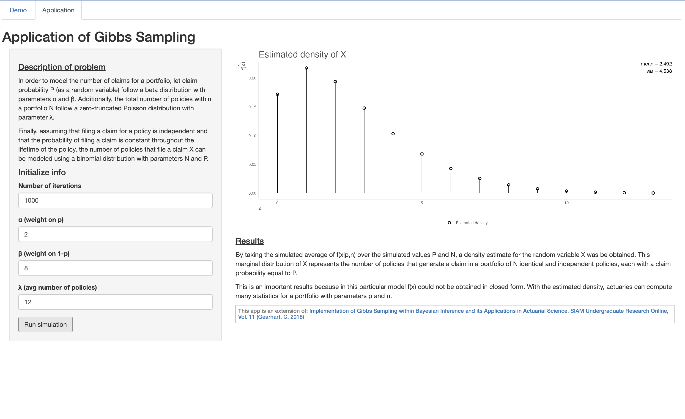

### ----- READ ME ----
# This app demonstrates the properties and results of Gibbs sampling, a MCMC method
# Once the number of parameters and number of iterations are initialized by the user,
# it generates n random numbers from a dependent sampling scheme contruscted according to Gibbs sampling methods
# The first tab demonstrates the properties / results of a Gibbs sampling algorithm
# The first panel checks the last 100 sampled values via a scatterplot to see if we can consider the generated numbers as an independent samples
# The second panel creates a histogram of the sampled values (minus the burn-in iterations) and compares it to the actual marginal densities
# The third panel plots the density estimates obtained by averaging over the conditional densities; again it compares it to the known marginal density
# The comparisons are made to demonstrate that Gibbs sampling results in samples from the desired distribution
# The second tab is an application of Gibbs sampling, where there is no closed form solution for the distribution of interest
# Once the iterations and parameters are initialized by the user, it will run the algorithm and output the estimated density and summary statistics
# Packages -> the following packages need to be installed in order to run this app
# -> tidyverse, magrittr, shiny, ggpubr, and actuar
### ----- Load packages ----
options(scipen = 999)
library("tidyverse")
library("magrittr")
library("shiny")
library("ggpubr")
# for pareto function
library("actuar")
# help pages for reactive events and isolate
# -> reactive -> https://shiny.rstudio.com/tutorial/written-tutorial/lesson6/
# -> isolate -> https://shiny.rstudio.com/articles/isolation.html
### ----- Load required items ----
# functions for demo
# function to generate random data from conditional distributions
generate_sample <- function(n = 10000, alpha = 5, beta = 100, start_x = 5, start_lambda = 1.5, seed = 0) {
# create matrix
data_sample <- matrix(data = NA, nrow = n, ncol = 3, dimnames = list(NULL, c("iteration", "X", "lambda")))
# conditionally set random seed
if (seed > 0) set.seed(seed)
# initialize counter and starting values
i = 1
data_sample[i, ] = c(i, start_x, start_lambda)
# generate new data for x and lambda based on sequentially updated conditional distributions
while (i < n) {
# record iteration
data_sample[i + 1, "iteration"] <- i + 1
# sample from x | lambda
data_sample[i + 1, "X"] <- rexp(n = 1, rate = data_sample[i, "lambda"])
# sample from lambda | x
data_sample[i + 1, "lambda"] <- rgamma(n = 1, shape = alpha + 1, rate = data_sample[i + 1, "X"] + beta)
# increase counter
i <- i + 1
}
return(data_sample)
}
# function to solve for density estimates
estimate_density <- function(input_values = 1, given_values = 1, equation = 1) {
# calculate density estimate
density_estimate <- equation(input_values, given_values) %>% colMeans
}
# functions for application
# function to generate random data from conditional distributions
generate_sample_2 <- function(k = 10000, alpha = 5, beta = 8, lambda = 12,
start_x = 5, start_p = 0.5, start_n = 15, seed = 0) {
# create dataframe
data_sample <- matrix(data = NA, nrow = k, ncol = 4, dimnames = list(NULL, c("iteration", "X", "p", "n")))
# conditionally set random seed
if (seed > 0) set.seed(seed)
# initialize counter and starting values
i = 1
data_sample[i, ] = c(i, start_x, start_p, start_n)
# generate new data for x, p and n based on sequentially updated conditional distributions
while (i < k) {
# record iteration
data_sample[i + 1, "iteration"] <- i + 1
# sample from x | p , n
data_sample[i + 1, "X"] <- rbinom(n = 1, size = data_sample[i, "n"], prob = data_sample[i, "p"])
# sample from p | x , n
data_sample[i + 1, "p"] <- rbeta(n = 1, shape1 = data_sample[i + 1, "X"] + alpha, shape2 = data_sample[i, "n"] + beta - data_sample[i + 1, "X"])
# sample from n - x | x , p and then calculate final n = (n - x) + x
data_sample[i + 1, "n"] <- rpois(n = 1, lambda = lambda * (1 - data_sample[i + 1, "p"])) + data_sample[i + 1, "X"]
# increase counter
i <- i + 1
}
return(data_sample)
}
# function to solve for density estimates
estimate_density_2 <- function(input_values = 1, given_values1 = 1, given_values2 = 1, equation = 1) {
# calculate density estimate
density_estimate = equation(input_values, given_values1, given_values2) %>% colMeans
}
# function to calculate mean of discrete probability distribution
calc_mean_2 <- function(x = 1, p_x = 1) {
sum(x * p_x)
}
# function to calculate variance of discrete probability distribution
calc_var_2 <- function(x = 1, p_x = 1) {
# calculate mean
mean <- sum(x * p_x)
# calculate variance
sum(((x - mean)^2) * p_x)
}
### ----- Set global plot options ----
# create default storytelling with data theme
theme_swd = theme_minimal() + theme(
# titles and captions
plot.title = element_text(size = rel(1.75), color = "grey30"),
plot.subtitle = element_text(size = rel(1.25), color = "grey30"),
plot.caption = element_text(hjust = 0, color = "grey30"),
# axes
axis.title.x = element_text(hjust = 0, color = "grey30"),
axis.title.y = element_text(hjust = 1, color = "grey30"),
axis.line = element_line(color = "grey90"),
axis.ticks = element_line(color = "grey90"),
# plot background and gridlines
panel.background = element_blank(),
panel.grid.major = element_blank(),
panel.grid.minor = element_blank(),
# legend
legend.title = element_text(color = "grey30"),
legend.text = element_text(color = "grey30")
)
# set global plot theme
theme_set(theme_swd)Dashboard
Demo - Tab 1

Demo - Tab 2

Demo - Tab 3

Application

Code
Pre code
UI
### ----- Define UI ----
# create user interface
ui <- fluidPage(
tabsetPanel(id = "tabs",
tabPanel("Demo",
# application title
titlePanel("Demonstrating the Properties of Gibbs Sampling using Simulation"),
# add sidebar
sidebarPanel(
# text block of description
h4(tags$u("Description of problem")),
p("Let the size of a claim X be exponentially distributed with
parameter λ. Further, treat the parameter λ as a random variable that follows
a gamma distribution with parameters α and β. α and β are constants."),
# section label
h4(tags$u("Initialize info")),
# input number of iterations
numericInput("n", label = "Number of iterations",
value = 1000, min = 200, step = 100),
# add columns within sidebar panel
fluidRow(
# first item
column(width = 5, offset = 0,
# input alpha
# -> even though the slider has a minimum, it still lets you type in something lower
# --> so will have to fix that in the future somehow?
numericInput("alpha", label = "α",
value = 5, min = 2, step = 1)),
# second item
column(width = 5, offset = 1,
# input beta
numericInput("beta", label = "β",
value = 100, min = 2, step = 1))
), # fluid row
# action button to explain results
actionButton("run", label = "Run simulation")
), # sidebar panel
# add output spot
mainPanel(
# set tabs for different output
tabsetPanel(id = "tabs_demo",
# first tab
tabPanel("Diagnostic plots",
# scatter plots of last iterations
plotOutput("plot_scatter"),
# panel to display results of simulation after generating data
# -> if want to have footer stay at bottom
# -> conditionalPanel doesn't save space for the output, so can trick it into saving space with textOuput and renderText
# --> then just use an if/else to have it print blank lines (ie save space), then print results
# --> this way the footer wouldn't have to move when results are printed
# -> but couldn't figure it out (can achieve this with HTML / CSS as well, but didn't want to figure it out)
conditionalPanel(condition = "input.run != 0",
h4(tags$u("Results")),
p("These figures show the last 100 sampled values for X and λ, respectively.
We can see that there is no pattern among the generated random numbers
from the Gibbs sampling algorithm. Therefore, they can be considered
independent random samples.")
) # conditional panel
), # tab panel
# second tab
tabPanel("Sampled values",
# histograms of sampled values and marginal curves
plotOutput("plot_hist"),
# panel to display results of simulation after generating data
conditionalPanel(condition = "input.run != 0",
h4(tags$u("Results")),
p("These histograms show values are generated from dependent sampling schemes,
which were based on the full conditional distributions of f(x|λ) and f(λ|x).
Additionally, the respective marginal density curves of X and λ are overlaid
on their corresponding histogram. The first 100 values of each sequence are
discarded as these are considered to be the burn-in iterations."),
p("The marginal densities appear to line up very well with the sampled values,
which indicates the implemented dependent sampling schemes have generated random
samples from their respective marginal distributions.")
) # conditional panel
), # tab panel
# third tab
tabPanel("Estimated densities",
# plots of estimated and actual density curves
plotOutput("plot_est"),
# panel to display results of simulation after generating data
conditionalPanel(condition = "input.run != 0", h4(tags$u("Results")),
p("By taking the simulated average of f(x|λ) over the sampled values of λ,
we obtain an estimate for the actual value of f(x) at the point x. These plots
show the estimated densities, which line up very well with the actual densities.
Therefore, we now have direct models of the respective target distributions.")
) # conditional panel
) # tab panel
), # tab panel
# footer
h6(tags$footer("This app is an extension of:",
tags$a(href = "https://www.siam.org/Portals/0/Publications/SIURO/Volume%2011/S016609.pdf?ver=2018-06-13-135921-713",
"Implementation of Gibbs Sampling
within Bayesian Inference and its Applications in Actuarial Science,
SIAM Undergraduate Research Online, Vol. 11 (Gearhart, C. 2018)"),
align = "left", style = "
position: sticky;
border: 1px solid grey;
bottom: 0;
width: 100%;
height: 40px;
color: grey;
padding: 5px;"
)) # footer
) # main panel
), # tab panel
tabPanel("Application",
# application title
titlePanel("Application of Gibbs Sampling"),
# add sidebar
sidebarPanel(
# text block of description
h4(tags$u("Description of problem")),
p("In order to model the number of claims for a portfolio, let claim probability P
(as a random variable) follow a beta distribution with parameters α and β. Additionally,
the total number of policies within a portfolio N follow a zero-truncated Poisson distribution
with parameter λ."),
p("Finally, assuming that filing a claim for a policy is independent and
that the probability of filing a claim is constant throughout the lifetime of the policy,
the number of policies that file a claim X can be modeled using a binomial distribution
with parameters N and P."),
# section label
h4(tags$u("Initialize info")),
# input number of iterations
numericInput("k_2", label = "Number of iterations",
value = 1000, min = 200, step = 100),
# input alpha
numericInput("alpha_2", label = "α (weight on p)",
value = 2, min = 1, step = 1),
# input beta
numericInput("beta_2", label = "β (weight on 1-p)",
value = 8, min = 1, step = 1),
# input lambda
numericInput("lambda_2", label = "λ (avg number of policies)",
value = 12, min = 1, step = 1),
# action button to explain results
actionButton("run_2", label = "Run simulation")
), # sidebar panel
# add output spot
mainPanel(
# plots of estimated density
plotOutput("plot_est_2"),
# panel to display results of simulation after generating data
conditionalPanel(condition = "input.run_2 != 0",
h4(tags$u("Results")),
p("By taking the simulated average of f(x|p,n) over the simulated values P
and N, a density estimate for the random variable X was be obtained.
This marginal distribution of X represents the number of policies that generate
a claim in a portfolio of N identical and independent policies,
each with a claim probability equal to P."),
p("This is an important results because in this particular model f(x) could not
be obtained in closed form. With the estimated density, actuaries can compute
many statistics for a portfolio with parameters p and n.")
), # conditional panel
# footer
h6(tags$footer("This app is an extension of:",
tags$a(href = "https://www.siam.org/Portals/0/Publications/SIURO/Volume%2011/S016609.pdf?ver=2018-06-13-135921-713",
"Implementation of Gibbs Sampling
within Bayesian Inference and its Applications in Actuarial Science,
SIAM Undergraduate Research Online, Vol. 11 (Gearhart, C. 2018)"),
align = "left", style = "
position: sticky;
border: 1px solid grey;
bottom: 0;
width: 100%;
height: 40px;
color: grey;
padding: 5px;"
)) # footer
) # main panel
) # tab panel
) # tabset panel
) # fluid pageServer
### ----- Define server ----
# how to get simulation to run every time run button is hit? not just if the inputs changed and button was hit
# create server
server <- function(input, output) {
# Demo -> Functions for data ------------------------
# function to generate data and create modified datasets
# -> call this function in place of the 'dataframe' if need to create a modified dataset or make a plot
# -> returns a list of the modified datasets
get_new_data <- reactive({
# create object to store datasets
data <- list(data_sample = NULL, data_scatter = NULL, data_sample2 = NULL)
# sample from conditional distributions
data[["data_sample"]] <- generate_sample(n = input$n, alpha = input$alpha, beta = input$beta)
# create data for scatterplot
data[["data_scatter"]] <- data[["data_sample"]] %>%
data.frame %>%
filter(iteration > input$n - 100)
# set number of burn-in iterations
burn_in <- 100
# remove burn-in iteration
data[["data_sample2"]] <- data[["data_sample"]] %>%
data.frame %>%
filter(iteration > burn_in)
return(data)
}) # event reactive
# function to perform calculations for x
density_x_given_lambda <- function(X = 1, Lambda = 1) {
# specify density equation
Lambda*exp(-Lambda*X)
}
# function to perform calculations for lambda
density_lambda_given_x <- function(Lambda = 1, X = 1, alpha = input$alpha, beta = input$beta) {
# specify density equation
(((X + beta)^(alpha + 1)) * (Lambda^alpha) * exp(-Lambda * (X + beta))) / gamma(alpha + 1)
}
# Demo -> Create diagnostic plots --------------------
# render scatterplot after generating new data
output$plot_scatter <- renderPlot({
# take a dependency on action button
# -> and prevent it from returning a plot the first time (ie don't run code until action button is hit)
if (input$run == 0) {return()}
# use isolate to avoid dependency on action button
isolate({
# # create scatterplots of last iterations to visually check for randomness
# # -> x plot
plot_scatter_x <- ggplot() +
geom_point(aes(x = iteration, y = X),
color = "black", fill = "white", shape = 21, size = 1, stroke = 0.5,
data = get_new_data()[["data_scatter"]]) +
labs(title = "Scatterplot of generated \nsampled values for X", x = "Iteration", y = "x")
# # -> lambda plot
plot_scatter_lambda <- ggplot() +
geom_point(aes(x = iteration, y = lambda),
color = "black", fill = "white", shape = 21, size = 1, stroke = 0.5,
data = get_new_data()[["data_scatter"]]) +
labs(title = "Scatterplot of generated \nsampled values for λ", x = "Iteration", y = expression(lambda))
# display plots
ggarrange(plot_scatter_x, plot_scatter_lambda)
}) # isolate
}) # render plot
# Demo -> Create histograms of sampled values and include density curves --------------------
# render histograms after generating new data
output$plot_hist <- renderPlot({
# take a dependency on action button
# -> and prevent it from returning a plot the first time (ie don't run code until action button is hit)
if (input$run == 0) {return()}
# use isolate to avoid dependency on action button
isolate({
# set maximum for x plot
limit_x = quantile(get_new_data()[["data_sample2"]]$X, 0.995)
# create histogram of x with marginal density curve overlaid
plot_hist_x <- ggplot() +
geom_histogram(aes(x = X, y = ..density.., fill = "Sampled values"),
bins = 40, color = "grey60",
data = get_new_data()[["data_sample2"]]) +
stat_function(aes(x = x, color = "Actual density"),
fun = dpareto2, args = list(shape = input$alpha, scale = input$beta),
data = data.frame(x = c(0, limit_x)),
n = 100000, size = 0.75) +
coord_cartesian(xlim = c(0, limit_x)) +
scale_fill_manual(values = "white") +
scale_color_manual(values = "grey40") +
labs(title = "Histogram of generated \nsample values of X", x = "x",
color = "", fill = "") +
theme(legend.position = "bottom")
# create histogram of lambda with marginal density curve overlaid
plot_hist_lambda <- ggplot() +
geom_histogram(aes(x = lambda, y = ..density.., fill = "Sampled values"),
bins = 40, color = "grey60",
data = get_new_data()[["data_sample2"]]) +
stat_function(aes(x = x, color = "Actual density"),
fun = dgamma, args = list(shape = input$alpha, rate = input$beta),
data = data.frame(x = c(0, max(get_new_data()[["data_sample2"]]$lambda))),
n = 100000, size = 0.75) +
scale_fill_manual(values = "white") +
scale_color_manual(values = "grey40") +
labs(title = "Histogram of generated \nsample values of λ", x = expression(lambda),
color = "", fill = "") +
theme(legend.position = "bottom")
# display plots
ggarrange(plot_hist_x, plot_hist_lambda)
}) # isolate
}) # render plot
# Demo -> Solve for estimated densities & create plots of estimated densities and actual densities ------------------------------------------
# render scatterplot after generating new data
output$plot_est <- renderPlot({
# take a dependency on action button
# -> and prevent it from returning a plot the first time (ie don't run code until action button is hit)
if (input$run == 0) {return()}
# use isolate to avoid dependency on action button
isolate({
# set max for plot and calculate points to estimate density of x at (if is to make sure step isn't zero)
step_x <- ifelse(diff(range(get_new_data()[["data_sample2"]]$X)) > 1,
round((quantile(get_new_data()[["data_sample2"]]$X, 0.995) - min(get_new_data()[["data_sample2"]]$X))/40, 5) %>% as.numeric,
0.01)
# set maximum for lambda plot
limit_x <- quantile(get_new_data()[["data_sample2"]]$X, 0.995)
# create matrices of data to be used for x
values_x <- seq(0, limit_x, by = step_x)
X1 <- matrix(data = , values_x, nrow = nrow(get_new_data()[["data_sample2"]]), ncol = length(values_x), byrow = TRUE)
Lambda1 <- matrix(data = get_new_data()[["data_sample2"]]$lambda, nrow = nrow(get_new_data()[["data_sample2"]]), ncol = ncol(X1))
# calculate density estimates for f(x)
data_estimated_x <- estimate_density(input_values = X1, given_values = Lambda1, equation = density_x_given_lambda) %>%
data.frame(x = values_x, f_x_hat = .)
# set max for plot and calculate points to estimate density of lambda at (if is to make sure step isn't zero)
step_lambda <- ifelse(diff(range(get_new_data()[["data_sample2"]]$lambda)) > 1,
round((quantile(get_new_data()[["data_sample2"]]$lambda, 0.995) - min(get_new_data()[["data_sample2"]]$lambda))/40, 5) %>% as.numeric,
0.01)
# create matrices of data to be used for lambda
values_lambda <- seq(0, max(get_new_data()[["data_sample2"]]$lambda), by = step_lambda)
Lambda2 <- matrix(data = , values_lambda, nrow = nrow(get_new_data()[["data_sample2"]]), ncol = length(values_lambda), byrow = TRUE)
X2 <- matrix(data = get_new_data()[["data_sample2"]]$X, nrow = nrow(get_new_data()[["data_sample2"]]), ncol = ncol(Lambda2))
# calculate density estimates for f(lambda)
data_estimated_lambda <- estimate_density(input_values = Lambda2, given_values = X2, density_lambda_given_x) %>%
data.frame(lambda = values_lambda, f_lambda_hat = .)
# X plot
# -> density estimates with marginal density curve overlaid
plot_estimated_x <- ggplot() +
geom_point(aes(x = x, y = f_x_hat, fill = "Estimated density"),
color = "black", shape = 21, size = 2, stroke = 1,
data = data_estimated_x) +
stat_function(aes(x = x, color = "Actual density"),
fun = dpareto2, args = list(shape = input$alpha, scale = input$beta),
data = data.frame(x = c(0, limit_x)),
n = 100000, size = 0.75) +
coord_cartesian(xlim = c(0, limit_x)) +
scale_fill_manual(values = "white") +
scale_color_manual(values = "grey60") +
labs(title = "Estimated and actual density of X", x = "x", y = expression(f(hat(x))),
color = "", fill = "") +
theme(legend.position = "bottom")
# Lambda plot
# -> density estimates with marginal density curve overlaid
plot_estimated_lambda <- ggplot() +
geom_point(aes(x = lambda, y = f_lambda_hat, fill = "Estimated density"),
color = "black", shape = 21, size = 2, stroke = 1,
data = data_estimated_lambda) +
stat_function(aes(x = x, color = "Actual density"),
fun = dgamma, args = list(shape = input$alpha, rate = input$beta),
data = data.frame(x = c(0, max(get_new_data()[["data_sample2"]]$lambda))),
n = 100000, size = 0.75) +
scale_fill_manual(values = "white") +
scale_color_manual(values = "grey60") +
labs(title = "Estimated and actual density of λ", x = expression(lambda), y = expression(f(hat(lambda))),
color = "", fill = "") +
theme(legend.position = "bottom")
# display plots
ggarrange(plot_estimated_x, plot_estimated_lambda)
}) # isolate
}) # render plot
# Application -> Functions for data ------------------------
# function to generate data and create modified datasets
# -> returns a list of the modified datasets
get_new_data_2 <- reactive({
# create object to store datasets
data_2 <- list(data_sample = NULL, data_sample2 = NULL)
# sample from conditional distributions
data_2[["data_sample"]] <- generate_sample_2(k = input$k_2, alpha = input$alpha_2, beta = input$beta_2, lambda = input$lambda_2)
# set number of burn-in iterations
burn_in_2 <- 100
# remove burn-in iteration
data_2[["data_sample2"]] <- data_2[["data_sample"]] %>%
data.frame %>%
filter(iteration > burn_in_2)
return(data_2)
}) # event reactive
# function to perform calculations for x
# -> x is technically a pmf
density_x_given_p_and_n_2 <- function(X = 1, P = 0.5, N = 1) {
# specify density equation
choose(N, X) * P^X * (1 - P)^(N - X)
}
# Application -> Solve for estimated densities & and create plot of estimated density ------------------------
# render scatterplot after generating new data
output$plot_est_2 <- renderPlot({
# take a dependency on action button
# -> and prevent it from returning a plot the first time (ie don't run code until action button is hit)
if (input$run_2 == 0) {return()}
# use isolate to avoid dependency on action button
isolate({
# determine step size for x values
if (diff(range(get_new_data_2()[["data_sample2"]]$X)) > 75) {
step <- 5
} else {
step <- 1
}
# create matrices of data to be used for x
values_x_2 <- seq(min(get_new_data_2()[["data_sample2"]]$X), max(get_new_data_2()[["data_sample2"]]$X), by = step)
X_2 <- matrix(data = , values_x_2, nrow = nrow(get_new_data_2()[["data_sample2"]]), ncol = length(values_x_2), byrow = TRUE)
P_2 <- matrix(data = get_new_data_2()[["data_sample2"]]$p, nrow = nrow(get_new_data_2()[["data_sample2"]]), ncol = ncol(X_2))
N_2 <- matrix(data = get_new_data_2()[["data_sample2"]]$n, nrow = nrow(get_new_data_2()[["data_sample2"]]), ncol = ncol(X_2))
# calculate density estimates for f(x) and scale so that probabilities sum to one
# -> with a step of 1, it is always super close to 1
# --> but if use a different step size, need to scale probabilities
data_estimated_x_2 <- estimate_density_2(input_values = X_2, given_values1 = P_2, given_values2 = N_2, equation = density_x_given_p_and_n_2) %>%
data.frame(x = values_x_2, f_x_hat = .) %>%
mutate(f_x_hat = f_x_hat/sum(f_x_hat))
# calculate mean
x_mean_2 <- round(calc_mean_2(x = data_estimated_x_2$x, p_x = data_estimated_x_2$f_x_hat), 3)
# calculate variance
x_var_2 <- round(calc_var_2(x = data_estimated_x_2$x, p_x = data_estimated_x_2$f_x_hat), 3)
# X plot
# -> density estimates with marginal density curve overlaid
p_2 <- ggplot() +
geom_point(aes(x = x, y = f_x_hat, fill = "Estimated density"),
color = "black", shape = 21, size = 2, stroke = 1,
data = data_estimated_x_2) +
geom_linerange(aes(x = x, ymax = f_x_hat),
ymin = 0,
data = data_estimated_x_2) +
scale_fill_manual(values = "white") +
annotate("text", x = Inf, y = Inf, hjust = 1, vjust = 1,
label = paste0("mean = ", x_mean_2, "\nvar = ", x_var_2)) +
labs(title = "Estimated density of X", x = "x", y = expression(hat(f(x))),
fill = "") +
theme(legend.position = "bottom")
# display plot
p_2
}) # isolate
}) # render plot
} # serverCombine
### ---- Run app ----
shinyApp(ui, server)